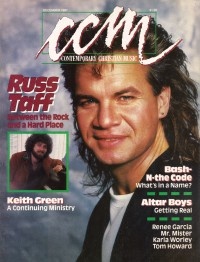
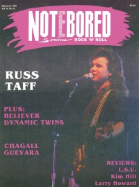

Russ TaffOn the cover
December 1987
CCM |

May 1991
Notebored | Media coverage:- Aug 1981 in Contemporary Christian Music "Russ Taff"
- Sep 1983 in Contemporary Christian Magazine "Russ Taff"
- Jul 1985 in Contemporary Christian Magazine "Heavy Medal", by Bob Darden
- Sep 1986 in Contemporary Christian Magazine "In Concert: Rainbow Music Hall, Denver, Colorado", by Melissa D. Campbell
- Jan 1987 in CCM "In Concert: Talented Trio In Tampa", by Noël Prim
- Dec 1987 in CCM "Asking The Hard Questions", by Davin Seay
- Jan 1988 in Campus Life "Russ Taff Shakes", by Jim Long
- Oct 1989 in CCM "Christian Musician: Making The Way Home", by John W. Styll
- Fall 1989 in Harvest Rock Syndicate "The Ties That Bind", by Thom Granger
- Apr 1990 in CCM "In Concert: The Cannery, Nashville, TN", by Brian Mansfield
- Jul 1990 in Campus Life "The Mold Is Broken"
- Dec 1990 in CCM "Christmas Our Way", by Steve Rabey
- Feb 1991 in CCM "Between Real and Ideal", by Dan MacIntosh
- Apr 1991 in CCM "Listening to Old Voices", by Brian Mansfield
- May 1991 in Notebored "Russ Taff"
- Jul 1991 in CCM "Fun in the Son", by David Banta
- Fall 1992 in Lutheran Libraries, by Susan G. Nauha
- Dec 1992 in CCM "A New Advent", by Holly Halverson
- Apr 1995 in CCM "Why Russ Taff Went Country", by John W. Styll
- May 1995 in CCM "Integrity and Christian Music: Mirror Christianity", by Jim Long
- Aug 1999 in Christian Single "Featured Artist: Russ Taff", by Ginny McCabe
- Sep 1999 in CCM "The Way Home", by Melissa Riddle
- Oct 1999 in Profile "Coming To Terms", by Lisa Zhito
- Sep 2001 in CCM "Story Behind the Song: We Will Stand", by Shari MacDonald
- Jul 2003 in CCM "It's Our Blockbuster Summer... CCM Magazine Turns 25: Christian Artist's Futile Attempts To Go Country"
Albums & reviews:1991: Under Their Influence
1994: We Will Stand (Yesterday and Today)
1999: Right Here, Right Now
2010: Another Sentimental Christmas
2025: Cover Story
Award Summary (Nominations / Wins)
Dove Awards1982 Dove Awards1984 Dove Awards- Song: "We Will Stand"
- Male Vocalist
1985 Dove Awards- Song: "We Will Stand"
- Male Vocalist
1986 Dove Awards1987 Dove Awards1989 Dove Awards1990 Dove Awards1992 Dove Awards- Contemporary Album: Under Their Influence
1995 Dove Awards- Recorded Music Packaging: We Will Stand (Yesterday and Today)
2011 Dove Awards2012 Dove AwardsGrammy Awards1991 Grammy AwardsPublished articles:1 article credited in CCM: 2005.Books about Russ Taff
- "Coping with Burnout" in Contemporary Christian Music (Paul Baker, 1985).
- "Russ Taff" in The Encyclopedia of Contemporary Christian Music (Mark Allan Powell, 2002).
- "Russ Taff" in The Billboard Guide to Contemporary Christian Music (Barry Alfonso, 2002).
|